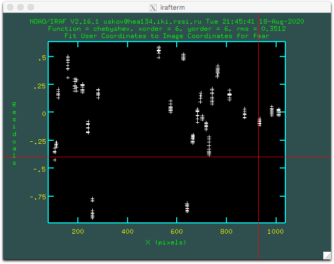

1 Getting Started
Create a quick summary of all files:
makelogCreate a folder named after our standard star and copy into it the star spectra, neon lamp, and flat lamp files:
mkdir BD+25d4655
cp `cat .log | grep 20200721 | grep '1024 200' | grep BD+25d4655 | awk '{print$3}'` BD+25d4655/Create the following lists:
Star spectra: list.sp
FeAr lamp spectra: FeAr list.neon
Halogen lamp spectra: Halogen list.flat
cat .log | grep 100.0 | awk '{print$3}' > list.sp
cat .log | grep Fe-Ar | awk '{print$3}' > list.neon
cat .log | grep Halogen | awk '{print$3}' > list.flat2 Initial Spectrum Reduction
2.1 Bias Averaging
Create a folder for spectral bias files and copy them in:
mkdir biassp
cp `cat .log | grep '1024 200' | grep bias | grep 0.0000 | grep -v flat | awk '{print$3}'` biassp/Check the bias frames before combining:
cd biassp/
ls *.fit > list.biassp
gedit list.biassp & # optional to remove "bad" bias frames
ds9 &
xs `cat list.biassp`Before averaging, we must fix FITS header keys because the GAIN value is incorrect. Run:
../bin/repair_tfosc_andor_keys *.fitCombine bias frames using median in IRAF (noao.imred.ccdred):
epar zerocombine
input=@list.biassp
output=Biassp2.fits
combine=medianRun:go, then copy the result:
Скопируем Biassp2.fits в папку ../Caldata
cp Biassp2.fits ../Caldata/Go to BD+25d4655 and fix header keys again:
../bin/repair_tfosc_andor_keys *.fit2.2 Subtracting the Averaged Bias
Subtract the averaged bias from all spectra:
../bin/process *.fit | si2.3 Averaging Flat Field Frames
In IRAF, open noao.imred.ccdred:
epar combine
input=@list.flat
output=flat
combine=averageRun :go
2.4 Averaging FeAr Lamp Spectra
In IRAF, open noao.imred.ccdred:
epar combine
input=@list.neon
output=neon
combine=average2.5 Creating the Response Function
In IRAF, open twodspec.longslit:
epar response
calibrat=flat
normaliz=flat
response=nflatRun :go
2.6 Dividing Star Spectra by Flat Field
In IRAF, open imred.ccdred:
epar ccdproc
images=@list.sp
flatcor=yes
flat=nflat.fitsRun :go
2.7 Wavelength Calibration
In IRAF, open twodspec.longslit
epar identify
images=neon.fits
section=middle line
coordli=linelists$idhenear.dat
cradius=8
epar reidentify
cradius=8
coordli=linelists$idhenear.dat
referenc=neon
images=neonepar fitcoords
images=neonRemove bad points with d p
y y r
y``r``r

Everything fits well.
2.8 Applying Wavelength Calibration to Star Spectra
Transform the spectra using the solution from fitcoords:
epar transform
input=@list.sp
output=tr//@list.sp
fitnames=neonRun :go
Note: in the database folder, files fcfear, idfear are created even though fitnames=fear
2.9 Cosmic Ray Removal
~uskov/runTmp/do_cleancrspec trfosc025*.fit2.10 Aligning Star Spectra for Stacking
In IRAF package iki, use the alignspectra command:
epar alignspec
images=tr//@list.sp
refimage=trfosc0254.fit
prefix=rg
imreg=[160:670,85:145] # region used for alignmentFor BTA data, a better region is [500:3000, 300:700]
2.11 Combining Aligned Spectra
In IRAF imred.ccdred:
combine input=rgtr//@list.sp output=sp.fits3 Extracting the Spectrum
In IRAF twodspec.apextract:
apall input=sp.fits output=sp.ms.fitsKey controls:
mcreate and center a new apertureddelete aperturelset left boundaryuset right boundarybenter background modezdelete background regionsset left then right boundaryqquit background mode
:o 3set background fit order to 3frefit background
Result: extracted star spectrum:

4 Flux Calibration
Create the standard star file std.fits using package noao.onedspec:
epar standard
input=sp.ms.fits
output=std.fits
star=mbd25d4655
caldir=./Apply DQE and extinction correction:
epar sensfunc
standard=std.fits
sensitiv=sensNow convert the spectrum to absolute fluxes:
epar calibrate
input=sp.ms.fits
output=sp.ms.c.fits
sensiti=sens.0001.fits5 Notation
flat – flat field frame
nflat – normalized flat field frame
neon – lamp line spectra
sp - final 2D spectrum, corrected for optical distortions and cosmic rays
sp.ms.fits – extracted 1D spectrum
sp.ms.c.fits — 1D spectrum calibrated in flux
@list.sp — list of spectra
@list.neon —list of arc lamp frames
@list.flat — list of flat lamp frames